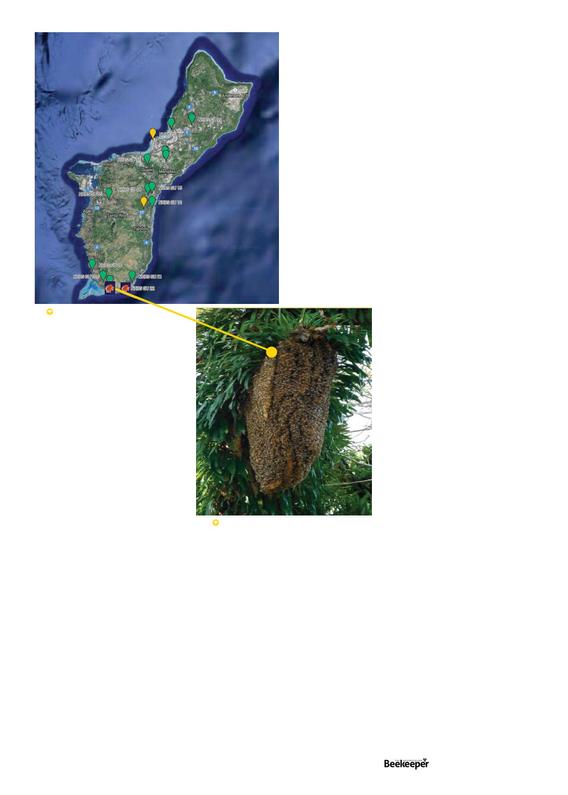

The territory’s entomologists were all understandably
shocked. This hive would need to be put down immediately!
Fortunately they had a Coconut Rhinoceros Beetle eradication
team led by invasive species specialist Roland Quitugua,
with a truck-based insecticide sprayer and 200 litres of
cypermethrin. “It was so saddening to watch,” Rosario says
of seeing them hose down the colony.
Two sentinel hives were then put near the area and
monitored. Nothing else was found until the following year
mites were detected in one of the sentinel hives. Again from
lab analysis (because a low level mite infection is unlikely to
show in an alcohol wash, here in Australia, samples from
sentinel hives are also sent for lab analysis6 and that’s how
mites were first detected in June 20227). Despite doing
alcohol washes at the time of sample taking, “I have yet to
witness a mite in a bee colony in Guam” Rosario says, as
all detections have been at such low levels they were only
caught in the lab.
Two colonies with varroa were detected in 2016, and one
in 2017. All were eradicated (“It was then that I learned to
do euthanasia with soap and water”). Since 2017, despite
constant monitoring, no mites have been detected.
Rosario believes the mites had probably come from the
Northern Mariana Islands, where
varroa is pervasive. Despite the import
of bee stock being illegal, it is believed
someone had smuggled bees in from
the CNMIs or Hawaii, either by boat
or air cargo.
Also Rosario, the Guam Department
of Agriculture, and the University
of Guam have been promoting
managed beekeeping, so that local
beekeepers will spot and report any
further exotic pest incursions. When
Rosario began surveying in 2013
there were only three beekeepers in
Guam. As a result of his public calls
to report bees, he was hearing from
all these people who either had bees
or wanted to get into beekeeping. He
noticed “a harmony between people
wanting to get rid of bees on their
property, and people wanting to keep
bees on their property.”1 So he rehomed the unwanted bees
to the people who wanted them.
The small community of beekeepers grew by about ten a year,
jumping from 55 to 105 during Covid as interest in hobbies one
can do at home peaked. Now there are 115 beekeepers in the
Guam Beekeeper’s Association (https://www.guambeekeepers.
org/) managing about 250 hives, including six beekeepers
commercially selling their honey. Rosario estimates that for
every managed hive, however, there are 10 feral hives (which
would equal 4.4 hives per square kilometre, which incidentally
exactly matches Australian estimates (see Letters, last issue)).
This push for people to call in about bees may have helped
detect another invasive pest – in June 2016 someone called in
a bee colony that turned out to be something much worse.
By the shores of clear and shallow Tumon Bay in the northern
built-up part of Guam, where the Hyatt and Hilton overlook
the beach, Rosario was called to look inside a hollow old
avocado tree. There he found not a bee colony but an ugly
a week people were calling him to
remove colonies from their homes, or
asking how to start keeping bees.
In March 2014, near the village
of
Malesso
beside
the
Cocos
Lagoon he was called out to a large
exposed colony eight metres up in a
monkeypod tree (Samanea saman)
(Fig 2). Up he went in a cherrypicker
lift to reach the colony, calmed the
bees with a smoker, and swept up
flying bees around the colony with
an insect net until he had about a
quarter cup (60ml) of bees. The bees
were then funnelled into a bottle
with ethanol, to be sent back to the
University of Guam for analysis. Job done, down he went and
on to the next site, he was just a technician after all, it was
for the lab to analyse. Altogether he took samples on Guam
from 18 feral colonies and two domestic hives.
Then he proceeded to the Northern Mariana islands of
Saipan and Tinian, where they sampled four colonies and
three of them immediately, obviously, were positive for varroa
– “mites were crawling out of the bottle!” Rosario says.
Back in Guam a month went by before he heard anything
more about that exposed colony beside the lagoon. Then
he got the bad news in a call from his boss, the then state
entomologist of Guam, Dr Russell Campbell. That and one
other feral colony also on the southern coast had both tested
positive for low levels (1-2 in the sample) of mites.
“I had no idea how bad they were until I was told that the
bee colony needed to be eradicated” Rosario relates, “I was
a student fresh out of college that did not know anything
about honey bees [or their pests].”
Fig 2 Gu-12, the first detection.
The honey bee colonies in
the initial APHIS survey, line
pointing at the initial detection,
with second detection near it.
Vol. 126 | No. 02 |
Celebrating 125 years | 39